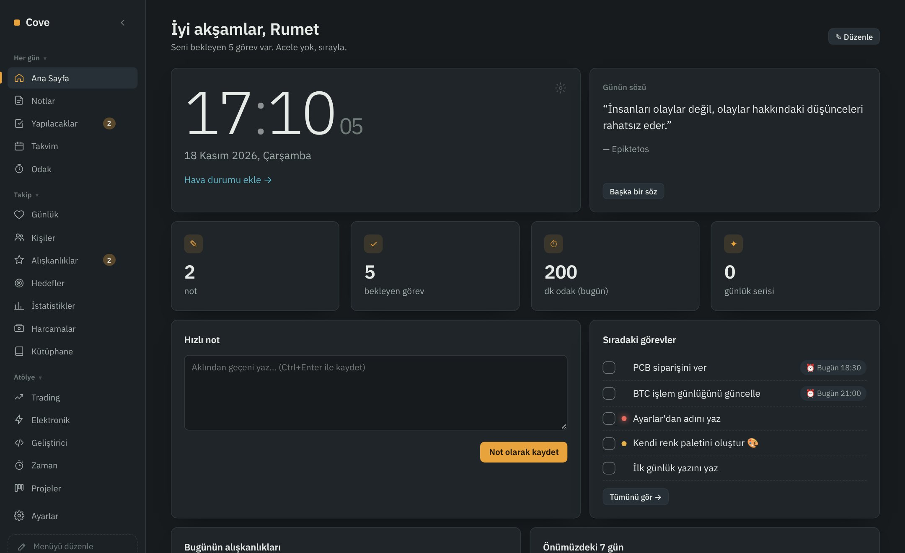
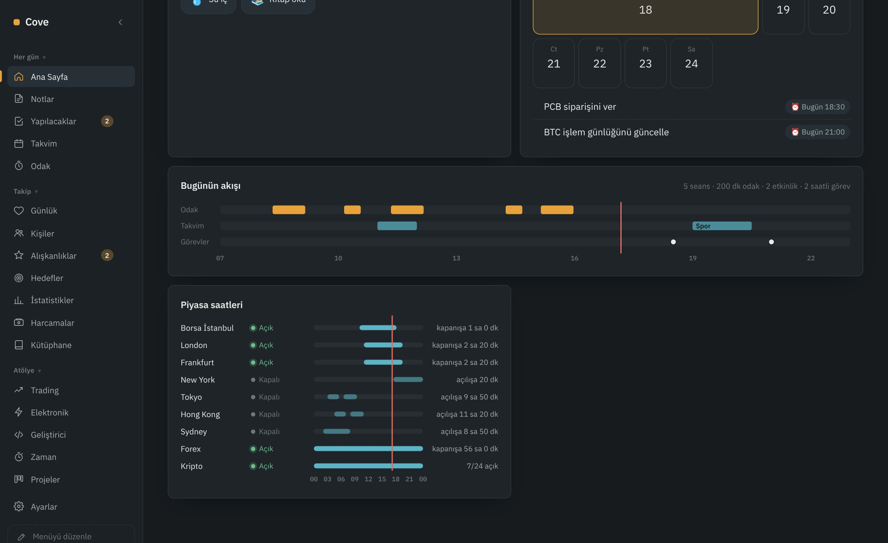
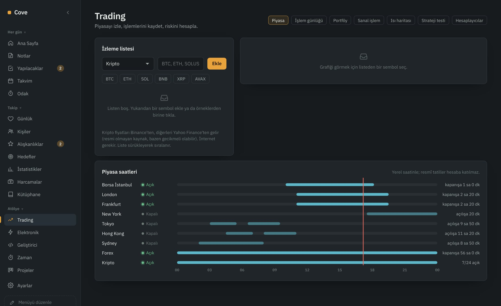
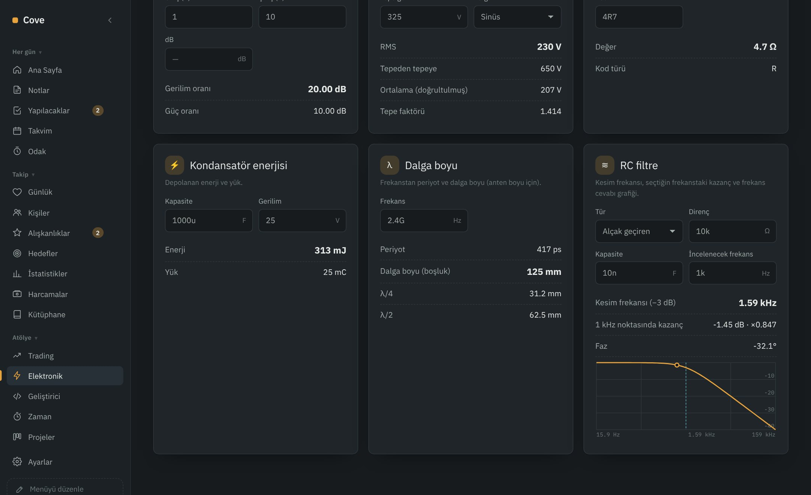

Notlar, görevler ve takvim; odak zamanlayıcısı ve ortam sesleri; canlı fiyatlar ve işlem günlüğü; elektronik hesaplayıcılar ve geliştirici araçları. Hesap yok, bulut yok — her şey senin bilgisayarında.
Notes, tasks and calendar; a focus timer with ambient sound; live prices and a trade journal; electronics calculators and developer tools. No account, no cloud — everything stays on your computer.

4.0'da iki tema ailesi var: yeni "Tezgâh" (tek vurgu rengi, nokta ızgarası, kıvılcımlar, yaylı geçişler) ve 2.x'in bütün hareketli temaları.
4.0 has two theme families: the new "Workbench" (one accent colour, dot grid, sparks, spring transitions) and every animated 2.x theme.
Ana sayfadaki “Bugünün akışı” odak seanslarını, etkinlikleri ve saatli görevleri tek bir zaman çizgisinde gösterir. Pomodoro görevlere bağlanır; gerçek ortam sesleri karıştırılabilir.
“Today's flow” on the home page puts focus sessions, events and timed tasks on one timeline. The Pomodoro timer links to tasks; real ambient sounds can be mixed.

İzleme listesi ve mum grafiği, alarmlar, işlem günlüğü, portföy, sanal işlem ve strateji testi. Yeni: Borsa İstanbul, Londra, New York, Tokyo ve diğerleri için piyasa saatleri — açılışa ve kapanışa kalan süreyle.
Watchlist and candlestick chart, alerts, trade journal, portfolio, paper trading and backtests. New: market hours for Borsa İstanbul, London, New York, Tokyo and more — with the time left to the open or close.

Yirmiden fazla hesaplayıcı, direnç renk kodu, envanter, seri monitör, pin şemaları, Arduino yükleme. Yeni: frekans cevabı grafiğiyle RC filtre tasarımı. API test aracı, GitHub panosu ve kod parçacıkları.
Over twenty calculators, resistor colour code, parts inventory, serial monitor, pinouts, Arduino upload. New: RC filter design with a frequency-response plot. API tester, GitHub dashboard and snippets.

Güncelleme kendiliğinden gelir; notların, görevlerin ve ayarların yerinde kalır. Eski temaların yerinde; yeni Tezgâh temalarını Ayarlar → Tema'dan seçebilirsin. Bilim sayfaları ve birkaç az kullanılan bölüm kaldırıldı.
The update arrives on its own; your notes, tasks and settings stay. Your themes stay; the new Workbench themes are under Settings → Theme. The science pages and a few rarely used parts were removed.
Cove'un tek resmi kaynağı bu sayfa ve github.com/rumetsasmaz/cove-releases. İndirdiğin dosyayı SHA-256 koduyla doğrula:
The only official sources are this page and github.com/rumetsasmaz/cove-releases. Check your download with its SHA-256:
5c413094e708f30591f27287a634ce5078247dfdee5ab3705fb7a96160127f58PowerShell'de Get-FileHash .\Cove-Setup.exe çalıştır; çıkan kod yukarıdakiyle aynı olmalı.
Run Get-FileHash .\Cove-Setup.exe in PowerShell; the result must match the code above.